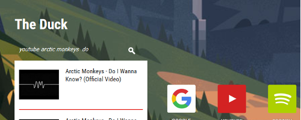
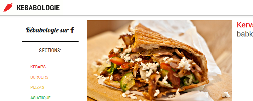

Personnal Projects

That Startpage Rocks Website
A startpage that is fast, simple and beautiful. It's an alternative to the default browser's homepage, but stands out with a search engine that directly finds results from web services. It's built with Flask, a python-based microframework, and is hosted on Google App Engine.

Kebabologie Website
A website hosting reviews of restaurants (mainly kebabs, but not only) which are cheap enough for students, in Geneva and its surroundings.

Duck Launcher Desktop App
An application launcher for ubuntu and other linux platforms. It's built with PyQt4, a desktop GUI library for python.
Other Contributions
There is none yet, but contact me if you'd like my help: theduck.dev@gmail.com